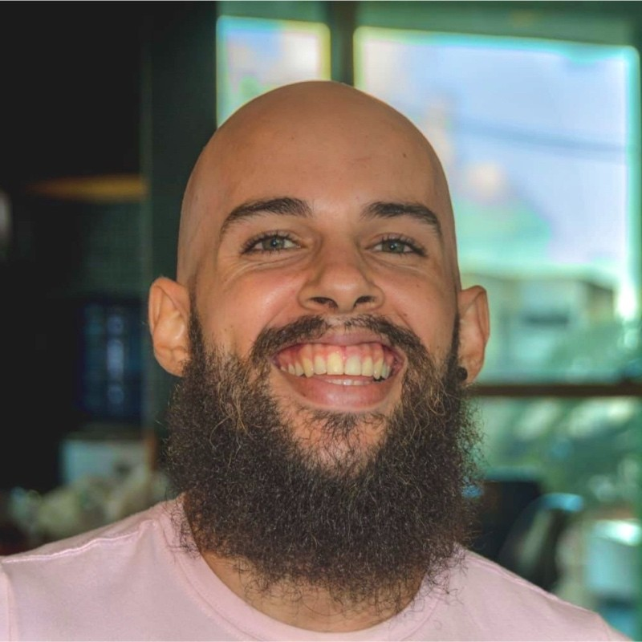
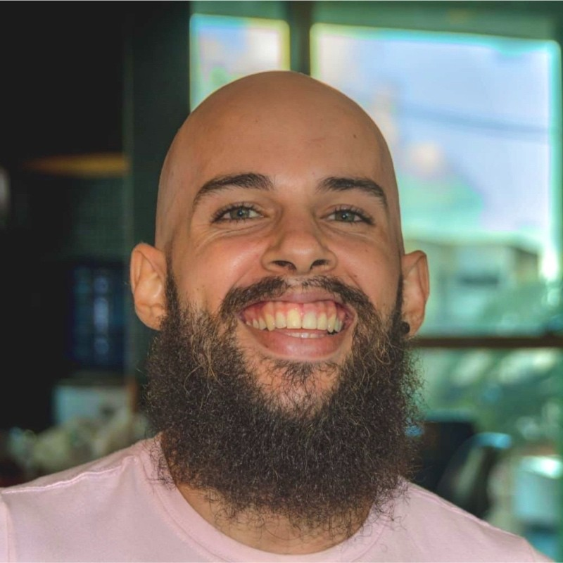

Semana Front-end | Dia 01: Construindo uma Landing Page no Mundo Invertido com HTML e CSS
DIO
83,3 mil inscritos
2 mil

Não gostei

Compartilhar

Download
28.418 visualizações Transmitido ao vivo em 23 ago. de 2022
Inicie uma aventura imersiva no mundo do Front-end com HTML e CSS. Para isso, criaremos uma landing page com a temática da série Stranger Things, a qual contará com a implementação de um theme switcher (light e dark) para explorarmos os mistérios do mundo invertido.

Geração Tech Unimed - BH - Ciência de Dados
DigitalInnovationOne 2,1 mil visualizações Transmitido há 2 dias
Scrum Talks
DigitalInnovationOne 1,6 mil visualizações Transmitido há 3 dias
Machine Learning Avançado - Fast Track
DigitalInnovationOne 1,7 mil visualizações Transmitido há 4 dias
Global Skills #2 - Project Planning
DigitalInnovationOne 971 visualizações Transmitido há 5 dias
Como aprender a programar Python do ZERO
DigitalInnovationOne 711 visualizações Transmitido há 6 dias
Geração Tech Unimed - BH - Ciência de Dados
DigitalInnovationOne 2,1 mil visualizações Transmitido há 2 dias
Scrum Talks
DigitalInnovationOne 1,6 mil visualizações Transmitido há 3 dias
Machine Learning Avançado - Fast Track
DigitalInnovationOne 1,7 mil visualizações Transmitido há 4 dias
Global Skills #2 - Project Planning
DigitalInnovationOne 971 visualizações Transmitido há 5 dias